The Stardust Process Workbench offers the ability to set Stardust specific preferences, which can be set in the Preferences dialog.
To open the Process Manager Preferences dialog:
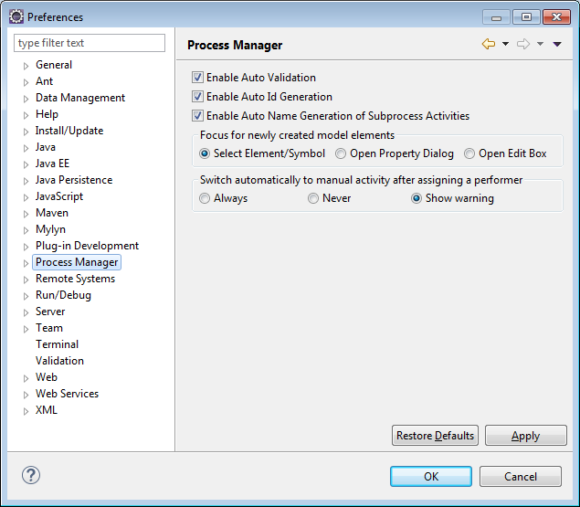
Figure: Open the Process Manager Preferences Dialog
Now set your Stardust specific preferences, which comprise:
You can choose that a validation check on your workflow model is automatically performed in the Process Workbench after modifications. Enable or disable the Auto Validation option in the Preferences dialog. To get more information on validating a workflow model please refer to the chapter Workflow Model Validation.
By default, an option is set for automatic Id generating. If you type in the name for your model element, the Id is generated automatically by using its name. To build the Id, the spaces of the name are left out. All non-supported characters are replaced by an underscore. Please refer to section ID Restrictions of chapter Model Element Identifiers for details on non-supported characters.
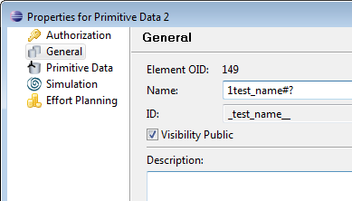
You can disable the default auto Id generation by deselecting this option. In case the Enable Auto Id Generation option is disabled, the ID entry field is enabled in the element properties page and you can enter an arbitrary Id:
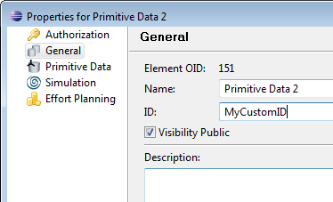
Please take care to use characters valid for Stardust element Ids, which is described in the section ID of the chapter Representation of Model Elements.
If you assign a process to a subprocess activity, you have the option:
By default the automatic naming of the subprocess activity is enabled. Please refer to chapter Configuring Subprocess Activities chapter for more detailed information.
Via this option you can determine how elements will be focused after they have been created. You have the choice between:
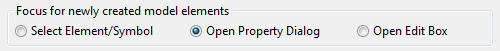
The Select element/symbol option is the default behavior for newly created elements. When created in the diagram, the element or symbol will be selected there. In case the element is created in the Outline view, it will be selected in the Outline view.
The option Open Property Dialog will open the property dialog of a newly created element, so that you can edit its properties immediately.
The option Open Edit Box causes the newly created element to be selected in the Outline view with its name in edit mode. So optionally you can change the name immediately. If the tree containing the element is collapsed, it will be expanded to set the focus on the element.
You can choose, if the implementation of an activity should automatically switch to a manual activity after you assigned a performer. You have the options:
If you want to go back to the default settings, click Restore Defaults.
Expand Process Manager to open the following options for setting specific Process Manager functionality preferences:
Add, reset or delete AuditTrail Databases.
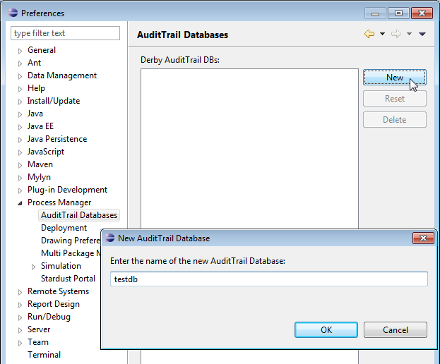
Figure: Set AuditTrail Databases
In the Deployment section, you can change the following predefined settings:
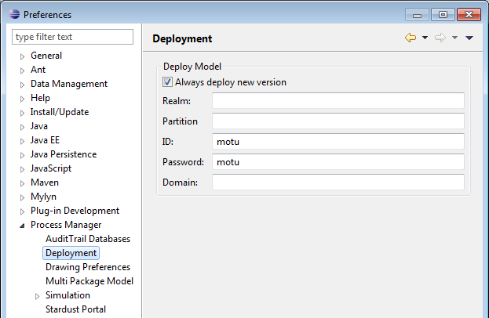
Figure: Deployment Preferences
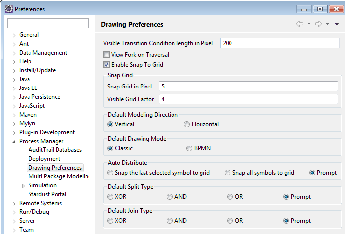
Figure: Drawing Preferences
Per default 200 pixels of a transition condition are visible in a process diagram. If the transition condition is longer, this is indicated by dots. You can change this limitation in the Visible Transition Condition length in Pixel entry field.
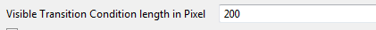
Figure: Setting the visible transition condition length
All Integer values between 1 and 1000 are supported. In case
you enter an invalid value, an error message appears at the top of the dialog and the
Apply and OK buttons are disabled.
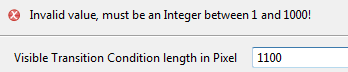
Figure: Invalid Transition Condition Length
You can enable this option to see how the Engine traverses during transition conditions. Please refer to the section Activity Thread of the chapter Runtime Behavior for detailed information on the Fork on Traversal functionality.
To facilitate the positioning of your elements in the diagram during modeling, you have the option to let your elements snap to a grid. In the Preferences dialog you can define the size of this grid and a factor for the grid to be visible in the following entry fields:
In the Snap Grid in Pixel entry field enter a value for the size of the grid elements in your diagram. The default size is set to 5 pixel.
You might want to have a more detailed grid for your elements to be snapped to than visible. Enter a factor in the Visible Grid Factor field for the grid to be displayed. Thus the size of the visible grid will be the size of the snap to grid times the specified factor. The default factor is 4.
Please refer to the section Grid Option of the chapter Working with Diagrams for detailed information about this functionality.
You can choose a default modeling direction like Vertical or Horizontal. It is recommended to use the vertical modeling direction, which is set as default value.
Choose whether you want to set the default drawing mode to Classic or BPMN. If you want to work with pools and lanes, choose the BPMN mode.
With the Auto Distribute preference you choose the behavior of created symbols in your diagram. When working with a grid, you have the options:
The default type value for newly created split gateway is configurable using the Default Split Type option.
The following options are provided to choose as default split type:
If Prompt is selected, upon creating a split, the user is prompted to select the split behavior. It also prompts whether to use the same type in the future actions. The default value for the split behavior is XOR.
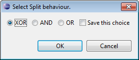
Figure: Select Split Behavior
Note if you click Cancel, the default split type gets applied.
The default type value for newly created join gateway is configurable using the Default Join Type option.
The following options are provided to choose as default join type:
If AND join type is selected in the Drawing Preferences, by default, the AND join gets applied. Same is applicable for the XOR and OR join type.
If Prompt is selected, upon creating a join, the user is prompted to select the join behavior. It also prompts whether to use the same type in the future actions. The default value for the join behavior is XOR.
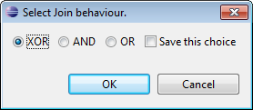
Figure: Select Join Behavior
Note if you click Cancel, the default join type gets applied.
This preference option can be used to mark elements as public or private. It means that the applications, data types, data and participants are available for import by reference if set to public. By default, the Public preference is selected. But if you have set it as private then it means that the applications, data types, data and participants are not visible and available for any reference. In this case, if you want to reference it from other models you should set the preference as Public. Note that though you can set the visibility of model elements here, these settings can be overridden in the modeler. For more information, refer to the Properties section of the chapter Specifying Applications. Also, refer to the section Composite Type of the chapter Defining Structured Types .
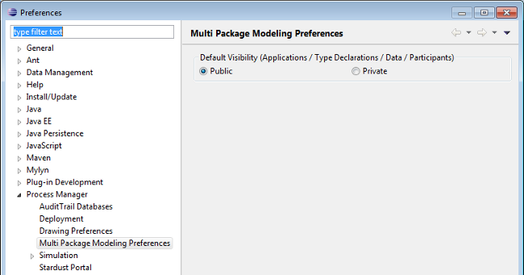
Figure: Multi Package Modeling Preferences
Select Simulation > Statistics Overlays to enable or disable the option to show statistics overlays for:
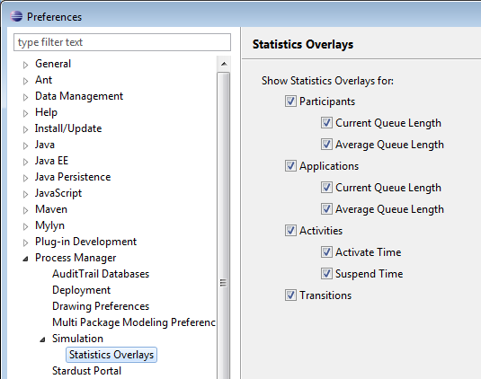
Figure: Set Simulation Preferences
Choose, whether you want to be warned on use of the internal Web browser.
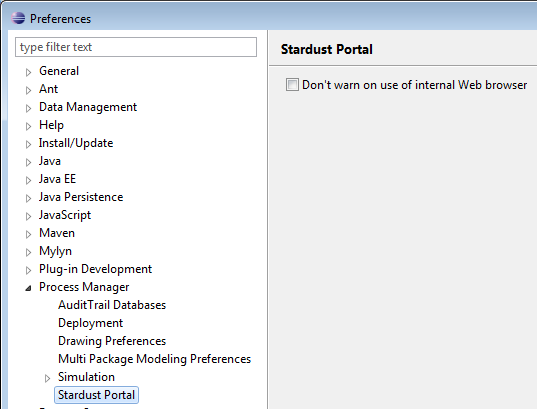
Figure: Stardust Portal Option